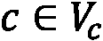
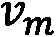

第 8 章:信用卡交易的图形分析
金融数据分析是大数据和数据分析中最常见和最重要的领域之一。事实上，由于移动设备数量的增加和在线支付标准平台的引入，银行生成和消费的交易数据量正呈指数级增长。
因此，需要新的工具和技术来尽可能多地利用这些海量信息，以便更好地了解客户的行为，并支持业务流程中的数据驱动型决策。数据还可以用来建立更好的机制，以提高在线支付过程的安全性。事实上，随着在线支付系统因电子商务平台而变得越来越受欢迎，与此同时，欺诈案件也在增加。欺诈交易的一个例子是用偷来的信用卡进行的交易。事实上，在这种情况下，欺诈性交易将不同于信用卡原始所有者进行的交易。
然而，由于涉及大量变量，建立自动程序来检测欺诈性交易可能是一个复杂的问题。
在本章中，我们将描述如何将信用卡交易数据表示为图形，以便使用机器学习算法自动检测欺诈交易。我们将通过应用我们在前面章节中描述的一些技术和算法来构建欺诈检测算法，从而开始处理数据集。
本章将涵盖以下主题:
- 从信用卡交易生成图表
- 从图中提取属性和社区
- 监督和非监督机器学习算法在欺诈分类中的应用
技术要求
在我们所有的练习中，我们将使用 Jupyter 笔记本和 Python 3.8。下面是使用pip为本章安装的 Python 库列表。例如，在命令行上运行pip install networkx==2.5:
Jupyter==1.0.0 networkx==2.5 scikit-learn==0.24.0 pandas==1.1.3 node2vec==0.3.3 numpy==1.19.2 communities==2.2.0
在本书的其余部分，除非有明确的相反说明，我们将把nx称为 Python import networkx as nx命令的结果。
与本章相关的所有代码文件都可以在https://github . com/packt publishing/Graph-Machine-Learning/tree/main/chapter 08获得。
数据集概述
本章中使用的数据集是信用卡交易欺诈检测数据集，可从以下网址的 Kaggle 获得:https://www.kaggle.com/kartik2112/fraud-detection?select=fraudTrain.csv 。
该数据集由模拟的信用卡交易组成，包含 2019 年 1 月 1 日至 2020 年 12 月 31 日期间的合法和欺诈交易。它包括与 800 家商户进行交易的 1，000 名客户的信用卡。数据集是使用 Sparkov 数据生成生成的。有关生成算法的更多信息可从以下网址获得:https://github.com/namebrandon/Sparkov_Data_Generation。
对于每项交易，数据集包含 23 个不同的特征。在下表中，我们将只显示本章中使用的信息:

表 8.1-数据集中使用的变量列表
为了我们的分析，我们将使用fraudTrain.csv文件。正如已经建议的，自己看一下数据集。强烈建议在开始任何机器学习任务之前，探索并尽可能熟悉数据集。我们还建议您研究本章中未涉及的另外两个数据集。第一个是捷克银行的金融分析数据集，可在 https://github.com/Kusainov/czech-banking-fin-analysis.获得。该数据集来自 1999 年的一家捷克银行，涵盖 1993-1998 年期间。与客户及其账户相关的数据由直接关系组成。不幸的是，交易上没有标签，因此无法使用机器学习技术训练欺诈检测引擎。第二个数据集是 paysim1 数据集，可在https://www.kaggle.com/ntnu-testimon/paysim1获得。该数据集包括基于真实交易样本的模拟移动货币交易，该样本是从在非洲国家实施的移动货币服务的一个月的财务日志中提取的。原始日志由一家跨国公司提供，该公司是移动金融服务的提供商，目前在全球超过 14 个国家开展业务。该数据集还包含欺诈/真实交易的标签。
使用 networkx 加载数据集和图形构建
我们分析的第一步将是加载数据集并构建图表。由于数据集代表一个简单的交易列表，我们需要执行几个操作来构建最终的信用卡交易图。数据集是一个简单的 CSV 文件；我们可以使用pandas加载数据，如下所示:
import pandas as pd df = df[df["is_fraud"]==0].sample(frac=0.20, random_state=42).append(df[df["is_fraud"] == 1])
为了帮助读者处理数据集，我们选择了 20%的真实交易和所有欺诈交易。因此，在总数为 1，296，675 的事务中，我们将只使用 265，342 个事务。此外，我们还可以调查数据集中欺诈交易和真实交易的数量，如下所示:
df["is_fraud"].value_counts()
作为结果，我们得到以下结果:
0 257834 1 7506
换句话说，在总共 265342 笔交易中，只有7506 (2.83 %)是欺诈交易，其他都是真实交易。
可以使用networkx库将数据集表示为图形。在开始技术描述之前，我们将从指定如何根据数据构建图表开始。我们使用了两种不同的方法来构建图表，即二分法和三分法，如 https://www.scinapse.io/papers/614715210.大学的论文 APATE:一种使用基于网络的扩展进行自动信用卡交易欺诈检测的新方法中所述
对于二分法，我们在这里建立一个加权二分图 w ，其中每个节点代表一个客户，每个节点代表一个商家。如果存在从顾客到商家的交易，则创建边。最后，对于图表的每条边，我们分配一个(总是正的)权重，代表交易的金额(以美元计)。在我们的形式化中，我们允许有向和无向图。
由于数据集表示时态交易，因此在客户和商家之间可能会发生多次交互。在我们的两种形式化中，我们决定将所有的信息折叠在一个单独的图中。换句话说，如果一个客户和一个商家之间存在多个交易，我们将在两个节点之间建立一个单独的边，其权重由所有交易金额的总和给出。在图 8.1 中可以看到直接二分图的图形表示:
图 8.1-从输入数据集生成的二分图
def build_graph_bipartite(df_input, graph_type=nx.Graph()):
df = df_input.copy()
mapping = {x:node_id for node_id,x in enumerate(set(df["cc_num"].values.tolist() + df["merchant"].values.tolist()))}
df["from"] = df["cc_num"].apply(lambda x: mapping[x])
df["to"] = df["merchant"].apply(lambda x: mapping[x])
df = df[['from', 'to', "amt", "is_fraud"]].groupby(['from', 'to']).agg({"is_fraud": "sum", "amt": "sum"}).reset_index()
df["is_fraud"] = df["is_fraud"].apply(lambda x: 1 if x>0 else 0)
G = nx.from_edgelist(df[["from", "to"]].values, create_using=graph_type)
nx.set_edge_attributes(G, {(int(x["from"]), int(x["to"])):x["is_fraud"] for idx, x in df[["from","to","is_fraud"]].iterrows()}, "label")
nx.set_edge_attributes(G,{(int(x["from"]), int(x["to"])):x["amt"] for idx, x in df[["from","to","amt"]].iterrows()}, "weight")
return G
代码非常简单。为了构建双边信用卡交易图，我们使用不同的networkx函数。为了更深入，我们在代码中执行的操作如下:
- 我们构建了一个地图，为每个商家或客户分配一个
node_id。 - 多个事务被聚合在一个事务中。
networkx函数nx.from_edgelist用于构建 networkx 图。- 两个属性，即
weight和label，被分配给每个边。前者表示两个节点之间的交易总数，而后者表示交易是真实的还是欺诈的。
从代码中我们还可以看到，我们可以选择是构建有向图还是无向图。我们可以通过调用以下函数来构建一个无向图:
G_bu = build_graph_bipartite(df, nx.Graph(name="Bipartite Undirect"))))
我们可以通过调用以下函数来构建一个直接图形:
G_bd = build_graph_bipartite(df, nx.DiGraph(name="Bipartite Direct"))))
唯一的区别是我们在构造函数中传递的第二个参数。
三方方法是前一种方法的扩展，也允许将交易表示为顶点。如果，一方面，这种方法大大增加了网络的复杂性，另一方面，它允许为商家和持卡人以及每笔交易构建额外的节点嵌入。在形式上，对于这种方法，我们构建了一个加权三部图，，其中，其中每个节点代表一个客户，每个节点代表一个商家，每个节点是一笔交易。从顾客到商家 的每笔交易都创建两条边和。
的每笔交易都创建两条边和。
最后，我们给图的每条边分配一个(总是正的)权重，代表交易的金额(以美元计)。因为，在这种情况下，我们为每个交易创建一个节点，所以我们不需要聚集从客户到商家的多个交易。此外，对于的其他方法，在我们的形式化中，我们允许有向和无向图。在图 8.2 中可以看到直接二分图的图形表示:
图 8.2-从输入数据集生成的三分法图表
def build_graph_tripartite(df_input, graph_type=nx.Graph()):
df = df_input.copy()
mapping = {x:node_id for node_id,x in enumerate(set(df.index.values.tolist() + df["cc_num"].values.tolist() + df["merchant"].values.tolist()))}
df["in_node"] = df["cc_num"].apply(lambda x: mapping[x])
df["out_node"] = df["merchant"].apply(lambda x: mapping[x])
G = nx.from_edgelist([(x["in_node"], mapping[idx]) for idx, x in df.iterrows()] + [(x["out_node"], mapping[idx]) for idx, x in df.iterrows()], create_using=graph_type)
nx.set_edge_attributes(G,{(x["in_node"], mapping[idx]):x["is_fraud"] for idx, x in df.iterrows()}, "label")
nx.set_edge_attributes(G,{(x["out_node"], mapping[idx]):x["is_fraud"] for idx, x in df.iterrows()}, "label")
nx.set_edge_attributes(G,{(x["in_node"], mapping[idx]):x["amt"] for idx, x in df.iterrows()}, "weight")
nx.set_edge_attributes(G,{(x["out_node"], mapping[idx]):x["amt"] for idx, x in df.iterrows()}, "weight")
return G
代码相当简单。为了构建三方信用卡交易图，我们使用不同的networkx函数。为了更深入，我们在代码中执行的操作如下:
- 我们构建了一个映射，为每个商家、客户和交易分配一个
node_id。 networkx函数nx.from_edgelist用于构建网络 x 图，- 两个属性，即
weight和label，被分配给每个边。前者表示两个节点之间的交易总数，而后者表示交易是真实的还是欺诈的。
从代码中我们还可以看到，我们可以选择是构建有向图还是无向图。我们可以通过调用以下函数来构建一个无向图:
G_tu = build_graph_tripartite(df, nx.Graph(name="Tripartite Undirect"))
我们可以通过调用以下函数来构建一个直接图形:
G_td = build_graph_tripartite(df, nx.DiGraph(name="Tripartite Direct"))
唯一的区别是我们在构造函数中传递的第二个参数。
在我们介绍的形式化的图表示中，真实的事务被表示为边。根据二分图和三分图的这种结构，欺诈/真实交易的分类被描述为边分类任务。在该任务中，目标是给给定的边分配一个标签(0表示真实，1表示欺诈)，描述该边所代表的交易是欺诈性的还是真实的。
在本章的其余部分，我们将使用二分图和三分无向图进行分析，分别用 Python 变量G_bu和G_tu表示。作为练习，我们将把本章提出的分析扩展到有向图。
我们使用下面的代码行，通过一个简单的检查来验证我们的图是否是一个真正的二分图，从而开始我们的分析:
from networkx.algorithms import bipartite all([bipartite.is_bipartite(G) for G in [G_bu,G_tu]]
结果，我们得到True。这种检查使我们确信这两个图实际上是二部/三部图。
此外，使用下面的命令，我们可以得到一些基本的统计数据:
for G in [G_bu, G_tu]: print(nx.info(G))
作为结果，我们得到以下结果:
Name: Bipartite Undirect Type: Graph Number of nodes: 1676 Number of edges: 201725 Average degree: 240.7220 Name: Tripartite Undirect Type: Graph Number of nodes: 267016 Number of edges: 530680 Average degree: 3.9749
正如我们所看到的，两个图在节点数和边数上都有所不同。二分无向图有 1676，等于客户数加上边数高的商家数(201725)。三方无向图有 267016，等于个客户数加上个商户数加上所有交易。
在此图中，与二分图相比，节点的数量如预期的更高(530，680)。这种比较中有趣的差异是由两个图的平均度数给出的。事实上，正如所料，二部图的平均度比三部图高。事实上，由于在三分图中，连接被事务节点的存在“分割”,所以平均程度较低。
在下一节中，我们将描述如何使用生成的事务图来执行更完整的统计分析。
网络拓扑和社区检测
在本节中，我们将分析一些图表指标，以便对图表的总体结构有一个清晰的了解。我们将使用networkx来计算我们在 第 1 章 、图表入门中看到的大部分有用指标。我们将尝试解释这些指标，以深入了解图表。
网络拓扑
我们的分析的一个很好的起点是提取简单的图度量，以便对二分和三分事务图的主要属性有一个大致的了解。
我们首先使用以下代码查看二分图和三分图的度数分布:
for G in [G_bu, G_tu]:
plt.figure(figsize=(10,10))
degrees = pd.Series({k: v for k, v in nx.degree(G)})
degrees.plot.hist()
plt.yscale("log")
作为结果，我们得到了下图中的曲线图:
图 8.3-二分图(左)和三分图(右)的度数分布
从图 8.3 中，可以看到节点的分布如何反映我们之前看到的平均程度。更详细地说，二分图具有更多样化的分布，峰值在 300 左右。对于三部图，该分布在度 2 处有一个大峰，而三部度分布的其他部分类似于二部分布。这些分布完全反映了两个图形定义方式的差异。事实上，如果二分图是由从顾客到商家的连接构成的，那么在三分图中，所有的连接都经过交易节点。这些节点在图中占大多数，它们的度都是 2(一条边来自客户，一条边来自商家)。结果，表示度 2 的箱中的频率等于事务节点的数量。
我们将通过分析edges weight分布继续我们的调查:
- 我们从计算分位数分布开始:
for G in [G_bu, G_tu]: allEdgesWeights = pd.Series({(d[0], d[1]): d[2]["weight"] for d in G.edges(data=True)}) np.quantile(allEdgesWeights.values,[0.10,0.50,0.70,0.9]) - 作为结果，我们得到如下:
array([ 5.03 , 58.25 , 98.44 , 215.656]) array([ 4.21, 48.51, 76.4 , 147.1 ])
- Using the same command as before, we can also plot (in log scale) the distribution of
edges weight, cut to the 90th percentile. The result is visible in the following diagram:图 8.4-二分图(左)和三分图(右)的边权重分布
我们可以看到，由于具有相同客户和商家的交易的聚合，二分图的分布与三分图相比向右移动(高值)，其中没有计算边权重，聚合了多个交易。
- 我们现在将研究
betweenness centrality指标。它测量有多少条最短路径通过一个给定的节点，给出了这个节点对于网络内部信息的传播有多重要的概念。我们可以使用下面的命令来计算节点中心性的分布:for G in [G_bu, G_tu]: plt.figure(figsize=(10,10)) bc_distr = pd.Series(nx.betweenness_centrality(G)) bc_distr.plot.hist() plt.yscale("log") - As result, we get the following distributions:
图 8.5-二分图(左)和三分图(右)的中间中心分布
正如所料，对于这两个图形，中间中心性很低。这可以理解为网络内部有大量的非桥接节点。类似于我们看到的度分布，中间中心值的分布在两个图中是不同的。事实上，如果二分图具有更多样化的分布，平均值为 0.00072，则在三分图中，事务节点是主要移动分布值并将平均值降低到 1.38e-05 的节点。此外，在这种情况下，我们可以看到三分图的分布有一个大峰，代表事务节点，分布的其余部分与二分分布非常相似。
- 最后，我们可以使用下面的代码来计算这两个图的匹配度:
for G in [G_bu, G_tu]: print(nx.degree_pearson_correlation_coefficient(G))
- 作为结果，我们得到如下:
-0.1377432041049189 -0.8079472914876812
在这里，我们可以观察到这两个图是如何具有负的分类性的，这可能表明良好连接的个体与不良连接的个体相关联。对于二分图，该值较低(-0.14)，因为由于大量的传入交易，具有较低程度的客户仅与具有较高程度的商家相关联。三部图的分类度甚至更低(-0.81)。由于事务节点的存在，这种行为是意料之中的。的确，那些节点的度总是为 2，它们链接到由高度连接的节点所代表的客户和商家。
社区检测
我们可以执行的另一个有趣的分析是社区检测。这种分析有助于识别特定的欺诈模式:
- The code to perform community extraction is as follows:
import community for G in [G_bu, G_tu]: parts = community.best_partition(G, random_state=42, weight='weight') communities = pd.Series(parts) print(communities.value_counts().sort_values(ascending=False))
在这段代码中，我们简单地使用
community库来提取输入图中的社区。然后，我们打印算法检测到的社区，根据包含的节点数量进行排序。 - 对于二分图，我们获得以下输出:
5 546 0 335 7 139 2 136 4 123 3 111 8 83 9 59 10 57 6 48 11 26 1 13
- 对于三部图，我们获得以下输出:
11 4828 3 4493 26 4313 94 4115 8 4036 ... 47 1160 103 1132 95 954 85 845 102 561
- 由于三分图中的大量节点，我们找到了 106 个社区(我们只报告了其中的一个子集)，而对于二分图，只找到了 12 个社区。因此，为了有一个清晰的图像，对于三部图，最好使用下面的命令来绘制不同社区中包含的节点的分布:
communities.value_counts().plot.hist(bins=20)
- By way of a result, we get the following:
图 8.6–社区节点大小的分布
从图中可以看出，在 2500 左右是如何达到峰值的。这意味着 30 多个大型社区拥有 2000 多个节点。从图中也可以看出，少数社区少则 1000 节点，多则 3000 节点。
- 对于算法检测到的每组社区，我们可以计算欺诈交易的百分比。此分析的目标是识别欺诈交易高度集中的特定子图:
graphs = [] d = {} for x in communities.unique(): tmp = nx.subgraph(G, communities[communities==x].index) fraud_edges = sum(nx.get_edge_attributes(tmp, "label").values()) ratio = 0 if fraud_edges == 0 else (fraud_edges/tmp.number_of_edges())*100 d[x] = ratio graphs += [tmp] print(pd.Series(d).sort_values(ascending=False)) - The code simply generates a node-induced subgraph by using the nodes contained in a specific community. The graph is used to compute the percentage of fraudulent transactions as a ratio of the number of fraudulent edges over the number of all the edges in the graph. We can also plot a node-induced subgraph detected by the community detection algorithm by using the following code:
gId = 10 spring_pos = nx.spring_layout(graphs[gId]) edge_colors = ["r" if x == 1 else "g" for x in nx.get_edge_attributes(graphs[gId], 'label').values()] nx.draw_networkx(graphs[gId], pos=spring_pos, node_color=default_node_color, edge_color=edge_colors, with_labels=False, node_size=15)
- 通过在二分图上运行这两个算法，我们将获得以下结果:
9 26.905830 10 25.482625 6 22.751323 2 21.993834 11 21.333333 3 20.470263 8 18.072289 4 16.218905 7 6.588580 0 4.963345 5 1.304983 1 0.000000
- For each community, we have the percentage of its fraudulent edges. To have a better description of the subgraph, we can plot community 10 by executing the previous line of code using
gId=10. As a result, we get the following:图 8.7-二分图的社区 10 的诱导子图
- 诱导子图的图像可以让我们更好地理解特定模式在数据中是否可见。在三分图上运行相同的算法，我们获得以下输出:
6 6.857728 94 6.551151 8 5.966981 1 5.870918 89 5.760271 ... 102 0.889680 72 0.836013 85 0.708383 60 0.503461 46 0.205170
- 由于有大量的社区，我们可以使用以下命令绘制欺诈与真实比率的分布:
pd.Series(d).plot.hist(bins=20)
- By way of a result, we get the following:
图 8.8–社区欺诈/真实优势比率的分布
从图中，我们可以观察到大部分的分布是围绕着比率在 2 到 4 之间的社区。有几个社区具有低比率(< 1)和高比率(> 5)。
- 此外，对于三分图，我们可以通过使用
gId=6执行前面的代码行来绘制由 1，935 个节点组成的社区 6(比率为 6.86):
图 8.9-三部图的社区 6 的诱导子图
至于二分用例，在这幅图中，我们可以看到一个有趣的模式，可以用来对一些重要的图子区域进行更深入的探索。
在本节中，我们将执行一些探索性的任务，以更好地理解图形及其属性。我们还给出了一个例子，描述了如何使用社区检测算法来发现数据中的模式。在下一节中，我们将描述如何使用机器学习来自动检测欺诈交易。
用于监督和非监督欺诈检测的嵌入
在本节中，我们将描述图机器学习算法如何使用前面描述的二分图和三分图来构建使用监督和非监督方法进行欺诈检测的自动程序。正如我们在本章开始时已经讨论过的，交易用边来表示，然后我们要将每个边分类到正确的类别中:欺诈或真实。
我们将使用以下管道来执行分类任务:
欺诈交易识别的监督方法
由于我们的数据集非常不平衡，欺诈交易占总交易的 2.83%，我们需要应用一些技术来处理不平衡的数据。在这个用例中，我们将应用一个简单的随机欠采样策略。更深入地说，我们将从多数类(真实交易)中抽取一个子样本，以匹配少数类(欺诈交易)的样本数量。这只是文献中可用的许多技术之一。还可以使用异常值检测算法，如隔离森林，将欺诈性交易检测为数据中的异常值。作为一项练习，我们将让您使用其他技术来扩展分析，以处理不平衡的数据，例如随机过采样或使用成本敏感的分类器来完成分类任务。可直接应用于图表的节点和边采样的具体技术将在 第 10 章 、图表新趋势中描述:
- 我们用于随机欠采样的代码如下:
from sklearn.utils import resample df_majority = df[df.is_fraud==0] df_minority = df[df.is_fraud==1] df_maj_dowsampled = resample(df_majority, n_samples=len(df_minority), random_state=42) df_downsampled = pd.concat([df_minority, df_maj_dowsampled]) G_down = build_graph_bipartite(df_downsampled, nx.Graph())
- The code is straightforward. We applied the
resamplefunction of thesklearnpackage to filter thedownsamplefunction of the original data frame. We then build a graph using the function defined at the beginning of the chapter. To create the tripartite graph, thebuild_graph_tripartitefunction should be used. As the next step, we split the dataset into training and validation with a ratio of 80/20:from sklearn.model_selection import train_test_split train_edges, val_edges, train_labels, val_labels = train_test_split(list(range(len(G_down.edges))), list(nx.get_edge_attributes(G_down, "label").values()), test_size=0.20, random_state=42) edgs = list(G_down.edges) train_graph = G_down.edge_subgraph([edgs[x] for x in train_edges]).copy() train_graph.add_nodes_from(list(set(G_down.nodes) - set(train_graph.nodes)))
- We can now build the feature space using the
Node2Vecalgorithm as follows:from node2vec import Node2Vec node2vec = Node2Vec(train_graph, weight_key='weight') model = node2vec_train.fit(window=10)
如第 3 章 、无监督图形学习中所述，使用
node2vec结果构建边缘嵌入，该边缘嵌入将生成分类器使用的最终特征空间。 - 执行此任务的代码如下:
from sklearn import metrics from sklearn.ensemble import RandomForestClassifier from node2vec.edges import HadamardEmbedder, AverageEmbedder, WeightedL1Embedder, WeightedL2Embedder classes = [HadamardEmbedder, AverageEmbedder, WeightedL1Embedder, WeightedL2Embedder] for cl in classes: embeddings = cl(keyed_vectors=model.wv) train_embeddings = [embeddings[str(edgs[x][0]), str(edgs[x][1])] for x in train_edges] val_embeddings = [embeddings[str(edgs[x][0]), str(edgs[x][1])] for x in val_edges] rf = RandomForestClassifier(n_estimators=1000, random_state=42) rf.fit(train_embeddings, train_labels) y_pred = rf.predict(val_embeddings) print(cl) print('Precision:', metrics.precision_score(val_labels, y_pred)) print('Recall:', metrics.recall_score(val_labels, y_pred)) print('F1-Score:', metrics.f1_score(val_labels, y_pred))
- 对于每个
Edge2Vec算法，先前计算的Node2Vec算法用于生成特征空间。 - 来自
sklearnPython 库的一个RandomForestClassifier在上一步生成的特性集上被训练。 - 在验证测试中计算不同的性能指标，即精度、召回率和 F1 值。
我们可以将之前描述的代码应用于二分图和三分图，以解决欺诈检测任务。在下表中，我们报告了二分图的性能:
表 8.2–二分图的监督欺诈边缘分类性能
在下表中，我们报告了三分图的性能:
表 8.3-三分图的监督欺诈边缘分类性能
在表 8.2 和表 8.3 中，我们报告了使用二分图和三分图获得的分类性能。从结果中我们可以看出，这两种方法在 F1 分数、精确度和召回率方面表现出了显著的差异。因为对于这两种图形类型，Hadamard 和平均边嵌入算法给出了最有趣的结果，所以我们将把注意力集中在这两种算法上。更详细地说，与二部图相比，三部图具有更好的精度(三部图为 0.89 和 0.74，而二部图为 0.73 和 0.71)。
相比之下，二分图与三分图相比具有更好的召回率(二分图的召回率为 0.76 和 0.79，而三分图的召回率为 0.29 和 0.45)。因此，我们可以得出结论，在这种特定情况下，使用二分图可能是更好的选择，因为与三分图相比，它可以用更小的图(就节点和边而言)实现 F1 方面的高性能。
无监督的欺诈交易识别方法
同样的方法也可以应用于使用 k-means 的无监督任务。主要区别在于生成的特征空间不会经历训练验证分割。实际上，在下面的代码中，我们将在下采样过程之后生成的整个图形上计算Node2Vec算法:
nod2vec_unsup = Node2Vec(G_down, weight_key='weight') unsup_vals = nod2vec_unsup.fit(window=10)
如之前为监督分析所定义的，当构建节点特征向量时，我们可以使用不同的Egde2Vec算法来运行 k-means 算法，如下所示:
from sklearn.cluster import KMeans
classes = [HadamardEmbedder, AverageEmbedder, WeightedL1Embedder, WeightedL2Embedder]
true_labels = [x for x in nx.get_edge_attributes(G_down, "label").values()]
for cl in classes:
embedding_edge = cl(keyed_vectors=unsup_vals.wv)
embedding = [embedding_edge[str(x[0]), str(x[1])] for x in G_down.edges()]
kmeans = KMeans(2, random_state=42).fit(embedding)
nmi = metrics.adjusted_mutual_info_score(true_labels, kmeans.labels_)
ho = metrics.homogeneity_score(true_labels, kmeans.labels_)
co = metrics.completeness_score(true_labels, kmeans.labels_
vmeasure = metrics.v_measure_score(true_labels, kmeans.labels_)
print(cl)
print('NMI:', nmi)
print('Homogeneity:', ho)
print('Completeness:', co)
print('V-Measure:', vmeasure)
- 对于每个
Edge2Vec算法，先前在训练和验证集上计算的Node2Vec算法用于生成特征空间。 - 来自
sklearnPython 库中的KMeans聚类算法适用于上一步生成的特征集。 - 不同的性能指标，即调整后的互信息 ( MNI )、同质性、完整性和 v-measure 得分。
我们可以将前面描述的代码应用于二分图和三分图，使用无监督算法来解决欺诈检测任务。在下表中，我们报告了二分图的性能:
表 8.4–二分图的无监督欺诈边缘分类性能
在下表中，我们报告了三分图的性能:

表 8.5-三分图的无监督欺诈边缘分类性能
在表 8.4 和表 8.5 中，我们报告了应用无监督算法使用二分图和三分图获得的分类性能。从结果可以看出，两种方法显示出显著的差异。还值得注意的是，在这种情况下，用 Hadamard 嵌入算法获得的性能明显优于所有其他方法。
如表 8.4 和表 8.5 所示，同样对于该任务，用三部图获得的性能超过了用二部图获得的性能。在无人监管的情况下，我们可以看到事务节点的引入如何提高整体性能。我们可以断言，在无监督的设置中，对于这种特定的用例，并使用在表 8.4 和表 8.5 中获得的结果作为参考，使用三分图可能是一个更好的选择，因为与二分图相比，它能够实现更好的性能。
总结
在本章中，我们描述了如何将传统的欺诈检测任务描述为图问题，以及如何使用前一章中描述的技术来解决该问题。更详细地说，我们介绍了我们使用的数据集，并描述了将事务数据转换为两种类型的图的过程，即二分图和三分无向图。然后，我们计算了两个图的局部(以及它们的分布)和全局指标，并对结果进行了比较。
此外，将社区检测算法应用于图形，以便发现和绘制交易图形中欺诈交易密度比其他社区更高的特定区域。
最后，我们使用监督和非监督算法解决了欺诈检测问题，比较了二部图和三部图的性能。作为第一步，由于问题是不平衡的，真实交易的存在更高，我们执行简单的下采样。然后，我们将不同的 Edge2Vec 算法与随机森林相结合，用于监督任务，并将 k-means 用于非监督任务，实现了良好的分类性能。
本章总结了一系列示例，这些示例用于展示如何将图机器学习算法应用于属于不同领域的问题，如社交网络分析、文本分析和信用卡交易分析。
在下一章中，我们将描述图形数据库和图形处理引擎的一些实际用途，它们对于将分析扩展到大型图形非常有用。